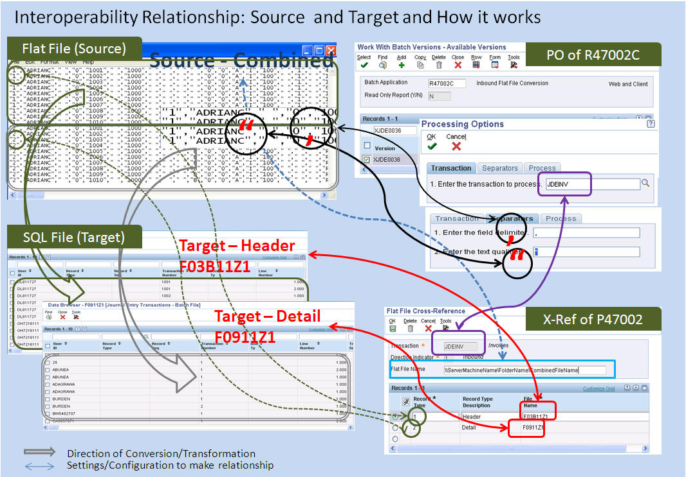

Firstly, the file name is not defined correctly. It has to be "\\server\directory\filename"
Secondly, the flat files are created incorrectly. Since the relationship between input file to output/target file is 1 to many, two files are to be merged into single file or R47002C has to be run again after defining another Processing type.
Simplified relationship could be as shown here:

Goal
This document is to explain a common mistake made when running R47002C to convert Flat File to SQL Format File. Before running R47002C - Inbound Flat File Conversion, please read the below KM Documents:
What is the available F47002.TYTN - TypeTransaction (Type - Transaction)?
Interoperability Type Transaction starts with JDE*
Same information can be reviewed either through P47002 or through P90701/P90701A - Interoperability Event Definition)
Define P47002 - Flat File Cross Reference:
For this example, review standard setting which 'JDEINV' is referencing
This value will be specified in Processing Option of R47002C
(TARGET FILE) What are Z table(s) to be populated? (a single file or more than 2 files)
Refer <Note 625719.1>: this reads "combine the multiple flat file records together into a single flat file made up of multiple record types"
For this example, F03B11Z1 - Batch Invoice for Header and F0911Z1 - Journal Entry Transactions - Batch File for Detail
Convert SQL format file to flat file or Excel file to flat file
Refer <Note 625719.1> to perform this
Or when databrowser is available, export data into *.csv file
Or write Data Conversion UBE using Enterprise Report Design Tool
Or convert data format through Data Transformation tools which is available for your database
Add the first column for Record Type which is defined from P47002 - Flat File Cross-Reference
As <Note 625719.1> reads "combine the multiple flat file records together into a single flat file made up of multiple record types"
Record Type written for the first column talks to F47002.EDTY - EDIType (Type Record)
(SOURCE FILE) Specify location which combined flat file is
This source of flat file is defined at header in P47002. For this reason if target SQL tables are more than 2 it has to be combined
For flexible file handling the location of source file can be 'Deployment Server' which is sitting in Intel platform
It has to be full definition for example, '\\ServerMachineName\FolderName\FileName' in Intel platform
Refer <Note 884743.1> for AS400 in IFS
Refer <Note 661013.1> to specify syntax to specify folder and file in Unix and AS400
Run R47002C and check Work Center to check error(s) may detected
Below is the common mistake that is observed when running Batch Invoice Processor (R03B11Z1I):
Create two flat files based on F03B11Z1 - Batch Invoices and F0911Z1 - Journal Entry Transactions - Batch File and name it as 'f03b11z1.txt' and 'f0911z1.txt'
Store this file at \\Server\EDI\Inbound
Go to P47002 and look for Inbound process for JDEINV and defined Flat File Name \\Server\EDI\Inbound
Record Type | Description | File Name
1 | Header | F03B11Z1
2 | Detail | F0911Z1
Run R47002C (do not call R03B11Z1I) which issues error "Open file unsuccessful"